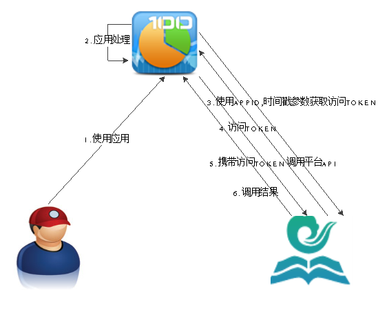
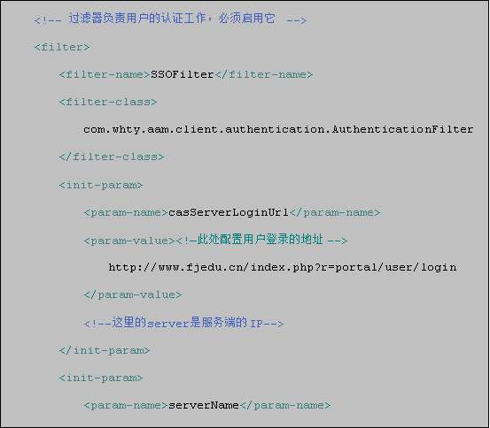
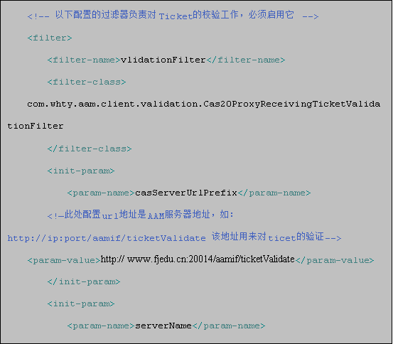
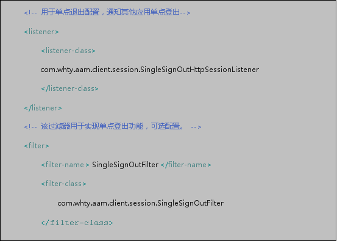
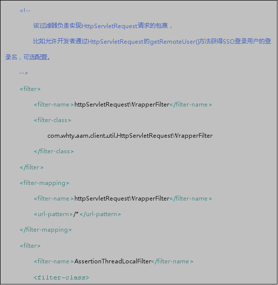

国家教育资源公共服务平台开放API接口规范
1 API访问鉴权
1.1 介绍
API调用时，应用向教育云平台请求token，教育云平台分配Token信息并指明有效期，只要在Token有效期内，应用无需重新发起Token申请，被调用方在第一次接收Token时发起验证请求，并保存token信息和有效期，只要在Token有效期内，后续调用就无需再向教育云平台申请Token验证。
1.2 应用场景
1.用户使用应用。
2.应用执行处理逻辑。
3.应用使用APPID，时间戳等参数向平台请求访问TOKEN。
4.平台向应用返回访问TOKEN。
5.应用携带访问TOKEN请求调用平台API。
6.平台对TOKEN进行校验并处理API调用请求，向应用返回调用结果。
2 应用支付
2.1 介绍
用户购买应用中商品，应用向教育云平台发起扣费，教育云平台扣取用户云币，并根据商务合同分成规则向应用所属合作伙伴帐户存入相应云币。
2.2 应用场景
- 用户在应用购买学习资料。
- 应用携带参数扣费相关参数重定向教育云平台进行扣费。
- 教育云平台页面提示用户扣费，展示所购物品和费用相关信息。
- 用户在扣费页面确认扣费。
- 教育云平台扣取用户云币，将扣费结果返回到应用。
- 教育云平台后台通知应用扣费结果。
- 应用向教育云平台返回扣费结果处理结果。
3 单点登录
3.1 介绍
国家教育资源公共服务平台集成多个业务系统，平台的前端展示门户对用户实现统一登录入口，只要在国家教育资源公共服务平台登录的用户在国家教育资源公共服务平台与各业务系统间不需要多次登录，进而实现对所有被授权的网络资源进行无缝访问了。
3.2 单点登录场景
- 用户登录教育云平台门户。
- 教育云平台保存用户会话信息，在浏览器COOKIE中保存用户TGC信息。
- 用户在教育云平台选择应用，教育云平台将用户重向至应用。
- 用户在应用内访问受保护资源，应用将用户重定至教育云平台。
- 教育云平台从浏览器中获取用户TGC信息，并根据TGC校验用户会话。
- 教育云平台生成ST，并携带ST将用户从教育云平台重定向至应用。
- 应用使用ST请求平台校验。
- 平台向应用返回校验结果及用户信息。
3.3 单点登录配置
说明：以下给出的配置是通用的客户端配置Demo，只适合跳转地址固定的场景（即serverName对应的value是固定的）。如有其他特殊需求，需客户端程序自己实现。
3.3.1 Java语言客户端配置
1.先把ssoclient.jar引入到项目的工程中（一般是lib）目录。
2.在项目web.xml文件添加以下内容




3.项目中取得ticket
可用request.getSession().setAttribute("ticket", ticket)；用ticket这名称从ssession中取得ticket。
4.取得用户的usessionid
可用com.whty.aam.client.authentication.AttributePrincipal这个类
AttributePrincipal principal = (AttributePrincipal)request.getUserPrincipal();
String usessionid = principal.getName();
3.3.2 .net语言流程说明
- 客户端配置需要拦截单点登录请求（如：http://ip:port/sso/*），但客户端服务器拦截到单点登录请求时重定向到登录页面。用户登录URL地址：http://www.fjedu.cn/index.php?r=portal/user/login&service=http://ip:port/ssotest;URL拼写说明：service参数是用户登录后门户重定到客户端的地址，此参数必传不能缺失;此处使用http://ip:port/ssotest为例子，需根据实际地址修改替换。
用户在门户成功登录认证后，门户会根据service参数地址重定向到客户端（service参数传递的URL地址），并在URL地址后增加ticket参数。如：http://ip:port/ssotest? ticket=********
- 客户端获取到ticket值，重定向到用户中心验证ticket有效和合法性， url请求格式为：http://www.fjedu.cn:20014/aamif/ticketValidate?ticket= SO6YEWI93093UTYDVXBZ4513==。
URL拼写说明： URL中IP与端口可替换实际的ip与端口，ticket参数是用户中心要求必传不能缺失.客户端请求平台验证ticket，通过验证ticket的有效性，服务端校验通过后，会销毁该一次性ticket,并返回已登录用户名。返回验证后的的ＸＭＬ报文。
验证通过的报文
<cas:serviceResponse xmlns:cas=“http://www.whty.aam.com”>
<cas:authenticationSuccess>
<cas:user>testss10</cas:user>
</cas:authenticationSuccess>
</cas:serviceResponse>
验证不通过的报文
<cas:serviceResponse xmlns:cas=“http://www.whty.aam.com”>
<cas:authenticationFailure code=“INVALID_TICKET”>
Ticket SO6YEWI93093UTYDVXBZ4513== not recognized
</cas:authenticationFailure>
</cas:serviceResponse>
客户端解释XML报文对验证通过的报文取<cas:user>节点的值获取到当前登录的用户usessionid。
客户端收到校验通过后的报文，取得用户usessionid，根据usessionid建立本地的用户会话。会话时间可默认为一小时，或根据需要具体配置.客户端再根据usessionid调用平台接口取得当前用户的用户信息。
3.3.3 其它语言配置流程说明
- 客户端配置需要拦截单点登录请求（如：http://ip:port/sso/*），但客户端服务器拦截到单点登录请求时重定向到登录页面。用户登录URL地址：http://www.fjedu.cn/index.php?r=portal/user/login&service=http://ip:port/ssotest;URL拼写说明：service参数是用户登录后门户重定到客户端的地址，此参数必传不能缺失;此处使用http://ip:port/ssotest为例子，需根据实际地址修改替换。
用户在门户成功登录认证后，门户会根据service参数地址重定向到客户端（service参数传递的URL地址），并在URL地址后增加ticket参数。如：http://ip:port/ssotest? ticket=********
- 客户端获取到ticket值，重定向到用户中心验证ticket有效和合法性， url请求格式为：http://www.fjedu.cn:20014/aamif/ticketValidate?ticket= SO6YEWI93093UTYDVXBZ4513==。
URL拼写说明： URL中IP与端口可替换实际的ip与端口，ticket参数是用户中心要求必传不能缺失.客户端请求平台验证ticket，通过验证ticket的有效性，服务端校验通过后，会销毁该一次性ticket,并返回已登录用户名。返回验证后的的ＸＭＬ报文。
验证通过的报文
<cas:serviceResponse xmlns:cas=“http://www.whty.aam.com”>
<cas:authenticationSuccess>
<cas:user>testss10</cas:user>
</cas:authenticationSuccess>
</cas:serviceResponse>
验证不通过的报文
<cas:serviceResponse xmlns:cas=“http://www.whty.aam.com”>
<cas:authenticationFailure code=“INVALID_TICKET”>
Ticket SO6YEWI93093UTYDVXBZ4513== not recognized
</cas:authenticationFailure>
</cas:serviceResponse>
客户端解释XML报文对验证通过的报文取<cas:user>节点的值获取到当前登录的用户usessionid。
客户端收到校验通过后的报文，取得用户usessionid，根据usessionid建立本地的用户会话。会话时间可默认为一小时，或根据需要具体配置.客户端再根据usessionid调用平台接口取得当前用户的用户信息。
4 接口列表
4.1 API访问鉴权接口
接口名称 | 接口方向 | 接口描述 |
获取访问TOKEN | 应用-教育云平台 | 应用使用访问凭证获取访问令牌 |
4.2 用户接口
接口名称 | 接口方向 | 接口描述 |
获取当前登录用户信息 | 应用教育云平台 | 应用根据单点登录会话ID查询用户信息 |
获取用户基本信息 | 应用教育云平台 | 应用获取用户基本信息 |
批量获取用户信息 | 应用教育云平台 | 应用批量获取添加此应用的用户信息 |
获取用户好友 | 应用教育云平台 | 应用获取用户好友列表 |
验证是否为好友 | 应用教育云平台 | 应用验证两个用户是否为好友 |
查询班级信息 | 应用教育云平台 | 应用根据班级ID获取班级信息 |
查询班级成员信息 | 应用教育云平台 | 应用根据班级ID获取班级成员信息 |
4.3 支付接口
接口名称 | 接口方向 | 接口描述 |
支付请求 | 应用-教育云平台 | 应用调用支付页面，请求使用云币支付 |
页面跳转同步通知 | 教育云平台应用 | 用户在教育云平台支付完成后，返回至应用支付成功页面 |
后台异步通知 | 教育云平台应用 | 用户在教云平台支付完成后，教育云平台后台通知应用支付结果 |
4.4 消息接口
接口名称 | 接口方向 | 接口描述 |
发送消息 | 应用-教育云平台 | 应用调用接口向用户发送消息 或应用以用户的身份向用户好友发送消息 |
5 接口参考
5.1.1 单点登录接口
登录成功后，单点登录平台生成票据信息ticket，SSO携带票据信息ticket并重定向到Service参数地址
5.1.1.1 接口说明
url | http://www.fjedu.cn/index.php?r=portal/user/login |
协议 | http |
是否需要鉴权 | 无 |
请求数限制 | 无 |
接口方向 | 应用平台 |
5.1.1.2 请求说明
参数名称 | 是否必须 | 类型 | 描述 |
service | 必选 | string | 登录成功后重定向的应用的目标地址即应用的入口地址，例如：http://ip:port/ssotest/ |
|
|
|
|
5.1.1.3 返回说明
登录成功后，重定向到目标地址
5.1.2 Ticket验证接口
验证Ticket，验证成功后并返回当前登录用户标识。
5.1.2.1 接口说明
url | http://www.fjedu.cn:20014/aamif/ticketValidate |
协议 | http |
是否需要鉴权 | 无 |
请求数限制 | 无 |
接口方向 | 应用平台 |
5.1.2.2 请求说明
参数名称 | 是否必须 | 类型 | 描述 |
ticket | 必选 | string | 单点登录成功后生成的票据信息 |
|
|
|
|
例如：http://www.fjedu.cn:20014/aamif/ticketValidate?ticket= SO6YEWI93093UTYDVXBZ4513==
5.1.2.3 返回说明
验证通过报文
<cas:serviceResponse xmlns:cas=“http://www.whty.aam.com”>
<cas:authenticationSuccess>
<cas:user>testss10</cas:user>
</cas:authenticationSuccess>
</cas:serviceResponse>
验证不通过的报文
<cas:serviceResponse xmlns:cas=“http://www.whty.aam.com”>
<cas:authenticationFailure code=“INVALID_TICKET”>
Ticket SO6YEWI93093UTYDVXBZ4513== not recognized
</cas:authenticationFailure>
</cas:serviceResponse>
客户端解释XML报文对验证通过的报文取<cas:user>节点的值获取到当前登录的用户usessionid。
客户端收到校验通过后的报文，取得用户usessionid，根据usessionid建立本地的用户会话。会话时间可默认为一小时，或根据需要具体配置.客户端再根据usessionid调用平台接口取得当前用户的用户信息。
5.2 API访问鉴权接口
5.2.1 获取访问TOKEN
5.2.1.1 接口说明
应用调用平台开放API之前，请求获取访问TOKEN。
5.2.1.2 请求说明
url | http://www.fjedu.cn:20001/apigateway/getaccesstoken |
格式 | json |
协议 | post |
是否需要鉴权 | true |
请求数限制 | true |
接口方向 | 应用平台 |
5.2.1.3 参数说明
参数名称 | 是否必须 | 类型 | 描述 |
appid | 必选 | String | 应用ID |
timestamp | 必选 | String | 时间戳。 |
keyinfo | 必选 | String | 对APPID、APPKEY、Timestamp进行sha1-hamc运算，加密串为APPID和APPKEY及Timestamp字符串相连,以APPKEY为加密参数 Php使用的签名函数：hash_hmac，hash_algos参数值为“sha1” 返回值大写 |
usessionid | 可选 | String | Ticket验证返回的usessionid |

5.2.1.4 返回说明
返回码 | 含义说明 |
000000 | 操作成功 |
999999 | 系统错误 |
4.字段说明
参数名称 | 是否必须 | 类型 | 描述 |
token | 必选 | String | token信息 |
validtime | 必选 | String | 有效期，只在有效期内(2小时)，应用无需重新申请，服务保存token及有效期，有效期内只需做一次验证。 |
platformCode | 必选 | String | 平台编码。六位数字，标明当前登录用户所属的平台 |
|
|
|
|
例如：
http://www.fjedu.cn:20001/apigateway/getaccesstoken
{"appid":"AP000000012697","timestamp":"1402968470233","keyinfo":"170C718FB73BBB58D3CCEB52EB32D0CF93CA2E4B"}
5.3 用户接口
5.3.1 获取当前登录用户信息
5.3.1.1 接口描述
取得当前登录用户的用户信息
5.3.1.2 请求说明
url | http://www.fjedu.cn:20001/aam/rest/user/getuserinfo/{usessionid}?token=xxxxxxx |
格式 | -- |
协议 | get |
是否需要鉴权 | true |
请求数限制 | true |
接口方向 | 应用—>平台 |
5.3.1.3 参数说明
无
5.3.1.4 返回说明
序号 | 字段名 | 约束 | 类型 | 长度 | 说明 |
1 | result | 必选 | string | 6 | 结果 000000:成功 301999:usessionid验证失败 |
2 | desc | 可选 | string | 250 | 结果描述 |
3 | 必选 | String | 64 | 唯一标识一个登录用户sessionid | |
4 | ueserinfo | 可选 |
|
|
|
4.1 | personid | 必选 | string | 60 | 用户的统一ID； |
4.2 | mobnum | 可选 | string | 16 | 手机号码 |
4.3 | 可选 | string | 16 | 邮箱 | |
4.4 | name | 可选 | string | 32 | 用户姓名 |
4.5 | nickname | 可选 | string | 100 | 昵称 |
4.6 | areacode | 可选 | string | 64 | 用户归属地区域 |
4.8 | gender | 可选 | string | 1 | 性别 0是女，1为男 |
4.9 | birthday | 可选 | date | 16 | 生日 |
4.10 | usertype | 必选 | string | 1 | 用户类型: 学生:0 老师:1 家长:2 机构:3 学校：4 学校工作人员：5 机构工作人员：6
|
4.11 | address | 可选 | string | 256 | 通讯地址 |
4.12 | postcode | 可选 | string | 8 | 邮编 |
4.13 | userlogolist | 可选 | - | - | 头像LOGO（URL地址）列表 |
4.1 | logotype | 可选 | int | 1 | 浏览渠道： 1：小； 2：中； 3：大； |
4.2 | logourl | 可选 | string | 512 | 头像LOGO（URL地址） |
4.14 | interests | 可选 | string | 512 | 兴趣，多个兴趣之间用分号分开 |
4.15 | profession | 可选 | string | 64 | 职业 |
4.16 | credtype | 可选 | string | 1 | 0:身份证 1:护照 2:军人证 3:其他 |
4.17 | 可选 | string | 32 | 证件号码 | |
4.18 | singature | 可选 | string | 140 | 签名 |
4.19 | fnascount | 可选 | int |
| 粉丝数 |
4.20 | teachesubjectlist | 可选 | Json数组 | 50 | 如登录用户为教师，则返回所教学科，JSON数组 |
4.20.1 | subjectid | 可选 | String | 32 | 学科id |
4.20.2 | subjectname | 可选 | String | 50 | 学科名称 |
4.20.3 | teachmaterialid | 可选 | string | 32 | 教材id |
4.20.4 | teachmaterialname | 可选 | String | 200 | 教材名称 |
4.20.5 | classid | 可选 | string | 32 | 用户所在班级id |
4.20.6 | classname | 可选 | string | 50 | 班级名称 |
4.20.7 | foundtime | 可选 | string | 4 | 班级成立年份 |
4.20.8 | grade | 可选 | String | 3 | 1:一年级 2：二年级 3：三年级 4：四年级 5：五年级 6：六年级 7：初一 8：初二 9：初三 10：高一 11：高二 12：高三 13: 职一 14:职二 15:职三 |
4.20.9 | studysection | 可选 | string | 3 | 1:小学 2:初中 3:高中 4:高职 |
4.21 | classid | 可选 | string | 50 | 用户所在班级名称；当登录用户为学生是会返回该值 |
4.22 | classname | 可选 | string | 50 | 班级名称；当登录用户为学生是会返回该值 |
4.23 | classidentity | 可选 | JOSN数组 | 2 | 用户所在班级身份: 1:班主任 2：班长 3：管理员 4: 教师 5：成员 6：教研员，7：教务员，8：信息员 |
4.24 | orgaid | 可选 | string | 32 | 用户所在机构\学校id |
4.25 | organame | 可选 | string | 200 | 用户所在机构\学校名称 |
4.26 | orgaidentity | 可选 | JOSN数组 | 2 | 用户在机构身份： 3 管理员 4 教师 5 普通成员 6 教研员 7 教务员 8 信息员 |
4.27 | tags | 可选 | string | 1000 | 个人标签 |
4.28 | updateTime | 可选 | string |
| 更新时间（"2014-06-23 15:38:06"） |
5 | platformCode | 必选 | String |
| 平台编码，中央平台000000 |
请求消息示例：
请求URL:
http://www.fjedu.cn:20001/aam/rest/user/getuserinfo/da9933b0-65a7-41ac-9858-1e01d23c7977?token=xxxxxxxxx
消息响应示例：
{
"result" : "000000",
"usessionid" : "da9933b0-65a7-41ac-9858-1e01d23c7977",
"platformCode" : "000000",
"userinfo" : {
"personid" : "CF4D06BE8BC74A59866FFBE2745EB519",
"birthday" : "1990-10-23",
"gender" : "1",
"name" : "柯宏树",
"usertype" : "0",
"idcardno" : "440901198508232100",
"fnascount" : 0,
"userlogolist" : [ ],
"orgaid" : "C13B6DE0493848558F03F0B36B3F229B",
"organame" : "华中师范大学第一附属中学",
"orgaidentity" : [ "5" ],
"classid" : "335181135C6A41F595C84008F3957C58",
"classname" : "高二(12)班",
"classidentity" : [ "5" ],
"account" : "13800138012"
}
}
5.3.2 根据账号获取用户基本信息
5.3.2.1 接口说明
应用根据账号可以获取经过登录认证后用户的基本信息。
5.3.2.2 请求说明
url | http://www.fjedu.cn:20001/aam/rest/getUserInfoReq?token=xxxxxxxx |
格式 | json |
协议 | post |
是否需要鉴权 | true |
请求数限制 | true |
接口方向 | 应用->平台 |
account:用户账号
5.3.2.3 参数说明
序号 | 字段名 | 约束 | 类型 | 长度 | 说明 |
1 | account | 必选 | string | -- | 用户账号 |
2 | platformcode | 可选 | string |
| 区域平台编码 |
Json请求串 ： {"account":"Testss10","platformcode": "000000"}
5.3.2.4 返回说明
序号 | 字段名 | 约束 | 类型 | 长度 | 说明 |
1 | result | 必选 | string | 6 | 结果 000000:成功 301001:用户不存在 301999:usessionid验证失败 |
2 | ueserinfo | 可选 |
|
|
|
2.1 | personid | 必选 | string | 60 | 用户的统一ID； |
2.2 | mobnum | 可选 | string | 16 | 手机号码 |
2.3 | 可选 | string | 16 | 邮箱 | |
2.4 | name | 可选 | string | 32 | 用户姓名 |
2.5 | nickname | 可选 | string | 100 | 昵称 |
2.6 | areacode | 可选 | string | 64 | 用户归属地区域 |
2.7 | gender | 可选 | string | 1 | 性别 0是女，1为男 |
2.8 | birthday | 可选 | date | 16 | 生日 |
2.9 | usertype | 必选 | string | 1 | 用户类型 学生:0 老师:1 家长:2 机构:3 |
2.10 | address | 可选 | string | 256 | 通讯地址 |
2.11 | postcode | 可选 | string | 8 | 邮编 |
2.12 | userlogolist | 可选 | - | - | 头像LOGO（URL地址）列表 |
2.12.1 | logotype | 可选 | int | 1 | 浏览渠道： 1：小； 2：中； 3：大； |
2.11.2 | logourl | 可选 | string | 512 | 头像LOGO（URL地址） |
2.13 | interests | 可选 | string | 512 | 兴趣，多个兴趣之间用分号分开 |
2.14 | profession | 可选 | string | 64 | 职业 |
2.15 | singature | 可选 | string | 140 | 签名 |
2.16 | tags | 可选 | string | 1000 | 个人标签 |
2.19 | account | 可选 | Stirng | 100 | 账号 |
2.20 | orgaid | 可选 | String | 32 | 用户所在机构\学校id |
2.21 | orgname | 可选 | String | 200 | 用户所在机构\学校名称 |
2.22 | classlist | 可选 | String[] |
|
|
2.22.1 | classid | 必选 | String | 32 | 用户所在班级ID |
2.22.2 | classname | 必选 | String | 200 | 用户所在班级名称 |
2.23 | teachesubjectlist | 可选 | Json数组 | 50 | 如登录用户为教师，则返回所教学科，JSON数组 |
2.23.1 | subjectid | 可选 | String | 32 | 学科id |
2.23.2 | subjectname | 可选 | String | 50 | 学科名称 |
2.23.3 | teachmaterialid | 可选 | string | 32 | 教材id |
2.23.4 | teachmaterialname | 可选 | String | 200 | 教材名称 |
2.23.5 | classid | 可选 | string | 32 | 用户所在班级id |
2.23.6 | grade | 可选 | String | 3 | 1:一年级 2：二年级 3：三年级 4：四年级 5：五年级 6：六年级 7：初一 8：初二 9：初三 10：高一 11：高二 12：高三 13: 职一 14:职二 15:职三 |
2.23.7 | studysection | 可选 | String | 3 | 1:小学 2:初中 3:高中 4:高职 |
2.23.6 | classname | 可选 | string | 50 | 班级名称 |
2.23.7 | foundtime | 可选 | string | 4 | 班级成立年份 |
2.23.8 | updateTime | 可选 | string |
| 更新时间（"2014-06-23 15:38:06"） |
消息响应示例
{
“result”: “000000”,
“ueserinfo”:
{
“personid”: “cbdf195ddd1c40efbd3c48ca97c0cbe2”,
“mobnum”: “13014741479”,
“birthday”: ““,
“gender”: “1”,
“name”: “Testss10”,
“usertype”: “5”,
“credtype”: “0 “,
“idcardno”: “110000198801024953”,
“fnascount”: 0,
“userlogolist”: [],
“account”: “Testss10”
}
}
5.3.3 批量获取用户信息
5.3.3.1 接口说明
应用获取安装此应用的用户信息。
5.3.3.2 请求说明
url | http://www.fjedu.cn:20001/aam/rest/getBatchUserInfoReq?token=xxxxxxxx |
格式 | json |
协议 | post |
是否需要鉴权 | true |
请求数限制 | true |
接口方向 | 应用—>平台 |
5.3.3.3 参数说明
序号 | 字段名 | 约束 | 类型 | 长度 | 说明 |
1 | 必选 | JOSN数组 |
| 多个用户ID | |
2 | platformcode | 可选 | string |
| 平台编码 |
5.3.3.4 返回说明
序号 | 字段名 | 约束 | 类型 | 长度 | 说明 |
1 | result | 必选 | string | 6 | 结果 000000:成功 301001:用户不存在 301999:usessionid验证失败 |
2 | ueserinfo | 可选 |
|
|
|
2.1 | personid | 必选 | string | 60 | 用户的统一ID； |
2.2 | mobnum | 可选 | string | 16 | 手机号码 |
2.3 | 可选 | string | 16 | 邮箱 | |
2.4 | name | 可选 | string | 32 | 用户姓名 |
2.5 | nickname | 可选 | string | 100 | 昵称 |
2.6 | areacode | 可选 | string | 64 | 用户归属地区域 |
2.8 | gender | 可选 | string | 1 | 性别 0是女，1为男 |
2.9 | birthday | 可选 | date | 16 | 生日 |
2.10 | usertype | 必选 | string | 1 | 用户类型 学生:0 老师:1 家长:2 机构:3 |
2.11 | address | 可选 | string | 256 | 通讯地址 |
2.12 | postcode | 可选 | string | 8 | 邮编 |
2.13 | userlogolist | 可选 | - | - | 头像LOGO（URL地址）列表 |
2.13.1 | logotype | 可选 | int | 1 | 浏览渠道： 1：小； 2：中； 3：大； |
2.13.2 | logourl | 可选 | string | 512 | 头像LOGO（URL地址） |
2.14 | interests | 可选 | string | 512 | 兴趣，多个兴趣之间用分号分开 |
2.15 | profession | 可选 | string | 64 | 职业 |
2.18 | singature | 可选 | string | 140 | 签名 |
2.19 | tags | 可选 | string | 1000 | 个人标签 |
2.20 | account | 可选 | Stirng | 100 | 账号 |
2.21 | orgaid | 可选 | String | 32 | 用户所在机构\学校id |
2.22 | orgname | 可选 | String | 200 | 用户所在机构\学校名称 |
2.23 | classlist | 可选 | String[] |
|
|
2.23.1 | classid | 必选 | String | 32 | 用户所在班级ID |
2.23.2 | classname | 必选 | String | 200 | 用户所在班级名称 |
|
|
|
|
|
|
- 返回结果例子
{
“result”: “000000”,
“ueserinfo”:
{
“personid”: “cbdf195ddd1c40efbd3c48ca97c0cbe2”,
“mobnum”: “13014741479”,
“birthday”: ““,
“gender”: “1”,
“name”: “Testss10”,
“usertype”: “5”,
“credtype”: “0 “,
“idcardno”: “110000198801024953”,
“fnascount”: 0,
“userlogolist”: [],
“account”: “Testss10”
}
}
5.3.4 获取用户好友
5.3.4.1 接口说明
应用可以调用查询用户好友接口，在用户授权的情况下，可以在教育云平台上查询用户的好友信息。
5.3.4.2 请求说明
url | http://www.fjedu.cn:20001/aam/rest/queryFriendsReq?token=xxxxxxxx |
格式 | -- |
协议 | Post |
是否需要鉴权 | true |
请求数限制 | true |
接口方向 | 应用平台 |
5.3.4.3 参数说明
序号 | 字段名 | 约束 | 类型 | 长度 | 说明 |
1 | personid | 必选 | string | 64 | 用户ID |
2 | start | 可选 | String | 64 | 查询开始位置，不填默认为0 |
3 | end | 可选 | String | 64 | 查询结束位置，不填默认为10 |
4 | platformcode | 可选 | String | 64 | 平台区域码 |
{
“personid”: “49659461d4094c7f830204175588e2ea”,
“start”: “0”,
“end”:“10”,
“platformcode”:“100001”
}
5.3.4.4 返回说明
序号 | 字段名 | 约束 | 类型 | 长度 | 说明 |
1 | 必选 | string | 6 | 结果 000000:成功 301001:用户不存在 | |
2 | start | 必选 | int |
| 查询开始位置 |
3 | end | 必选 | int |
| 查询结束位置 |
4 | count | 必选 | int |
| 总记录条数 |
5 | list | 可选 |
|
| 成员信息列表 |
5.1 | peronsid | 可选 | String | 32 | 用户id |
5.2 | account | 可选 | String | 20 | 用户名 |
5.3 | name | 可选 | string | 32 | 用户姓名 |
5.4 | connecthetime | 可选 | date | 32 | 关注时间，我主动关注他的时间 |
5.5 | connectmetime | 可选 | string | 100 | 关注时间，他关注我的时间 |
5.6 | userlogolist | 可选 | - | - | 头像LOGO（URL地址）列表 |
5.6.1 | logotype | 可选 | int | 1 | 头像类型： 1：小； 2：中； 3：大； |
5.6.2 | logourl | 可选 | string | 512 | 头像LOGO（URL地址） |
- 返回结果例子
{
“retcode”:“000000”,
“count”:“2”,
“start”:“0”,
“end”:“10”,
“list”: {[
“personid”:“1289301erwopUJYHDW24”,
“areacode”:“510000”
“mobNum“: “13800138000”,
“email”: “123456@qq.com”,
“name”: “test”
],
[
“personid”:“1289301erwopUJYHDW23”,
“areacode”:“510000”
“mobNum“: “13800138001”,
“email”: “1234567@qq.com”,
“name”: “test2”
]
},
}
5.3.5 验证用户是否为好友
5.3.5.1 接口说明
应用可以调用验证用户是否为好友接口，验证是否为好友
5.3.5.2 请求说明
url | http://manage.tianyuyun.cn :22015/aam/rest/validaFriendsReq?token=xxxxxxxx |
格式 | json |
协议 | post |
是否需要鉴权 | true |
请求数限制 | true |
接口方向 | 应用平台 |
5.3.5.3 参数说明
序号 | 参数名称 | 是否必须 | 类型 | 描述 |
1 | 必须 | String | 用户id | |
2 | 必选 | String | 好友的用户id | |
3 | platformcode | 可选 | String | 平台区域码 |
5.3.5.4 返回说明
返回码 | 含义说明 |
000000 | 验证成功，为好友关系 |
301001 | 用户不存在 |
301122 | 好友不存在 |
字段说明
字段名 | 约束 | 类型 | 说明 |
result | 必选 | string | 返回码 |
desc | 可选 | String | 返回消息说明 |
返回结果例子
{
“result”:“000000”,
“desc”:“验证成功”
}
5.3.6 查询班级信息
5.3.6.1 接口描述
根据班级ID查询班级信息
5.3.6.2 请求说明
url | http://www.fjedu.cn:20001/aam/rest/queryClassInfoReq?token=xxxxxxxx |
支持验证方式 | --- |
格式 | json |
协议 | post |
是否需要鉴权 | true |
请求数限制 | true |
接口方向 | 展现—>平台 |
5.3.6.3 参数说明
序号 | 字段名 | 约束 | 类型 | 长度 | 说明 |
1 | 必选 | Json数组 | -- | 班级id的JSON数组，一个或多个 | |
2 | platformcode | 可选 | String | 6 | 平台编码 |
{"classids":"[\"00d81f28cdbf412c8757a3b92ffeed48\",\"19e0f91aaf224fb28a712537418a379c\",\"5e5ed67bc84b4b10ba5bce8d4bd12385\"]",
"platformcode":"000000"
}
5.3.6.4 返回说明
序号 | 字段名 | 约束 | 类型 | 长度 | 说明 |
1 | result | 必选 | string | 6 | 结果 000000:查询成功 |
2 | desc | 可选 | string | 50 | 返回描述 |
3 | classinfolist | 可选 |
|
| 班级信息JSON数组 |
3.1 | classid | 可选 | string | 32 | 班级ID |
3.2 | orgaid | 可选 | string | 32 | 所属机构/学校编号 |
3.3 | classname | 可选 | string | 50 | 班级名称 |
3.4 | gradeclass | 可选 | int | 2 | 班别 相应的数字，代表相应班别，如：1代表1班 |
3.5 | grade | 可选 | int | 2 | 年级 1:一年级 2：二年级 3：三年级 4：四年级 5：五年级 6：六年级 7：初一 8：初二 9：初三 10：高一 11：高二 12：高三 |
3.6 | foundtime | 可选 | string | 32 | 成立年份 |
3.7 | created | 可选 | string | 32 | 创建时 |
3.8 | membercount | 可选 | int | 6 | 成员数 |
3.9 | classmanager | 可选 | string | 32 | 班级管理员信息 |
3.9.1 | personid | 可选 | string | 32 | 管理员用户ID |
3.9.2 | name | 可选 | string | 50 | 管理员姓名 |
3.10 | headteacher | 可选 | string | 32 | 班主任信息 |
3.10.1 | personid | 可选 | string | 32 | 班主任用户ID |
3.10.2 | name | 可选 | string | 50 | 班主任姓名 |
3.11 | classmonitor | 可选 | string | 50 | 班长信息 |
3.11.1 | personid | 可选 | string | 32 | 班长用户ID |
3.11.2 | name | 可选 | string | 50 | 班长姓名 |
3.12 | teacherlist | 可选 | String[] | 50 | 班级教师信息 |
3.12.1 | personid | 可选 | string | 32 | 教师用户ID |
3.12.2 | name | 可选 | string | 50 | 教师姓名 |
3.13 | classalises | 可选 | string | 50 | 班级别名 |
3.14 | flagpic | 可选 | string | 256 | 班级标识图片(URL) |
3.15 | classcate | 可选 | string | 1 | 班级类型 0：普通班 1：实验班 |
5.3.7 查询班级成员信息
5.3.7.1 接口描述
查询成员信息。
5.3.7.2 请求说明
url | http://www.fjedu.cn:20001/aam/rest/queryClassMemberReq?token=xxxxxxxx |
支持验证方式 | --- |
格式 | json |
协议 | post |
是否需要鉴权 | true |
请求数限制 | true |
接口方向 | 展现—>平台 |
5.3.7.3 参数说明
序号 | 字段名 | 约束 | 类型 | 长度 | 说明 |
1 | classid | 必选 | string | -- | 班级id |
2 | start | 必选 | int |
| 记录开始数 |
3 | end | 必选 | int |
| 记录结束数 |
4 | platformcode | 可选 | string |
| 平台编码 中央平台：000000 |
示例：
{"classid":"00d81f28cdbf412c8757a3b92ffeed48",
“start”:”0”,
"end":"10",
"platformcode":"000000",
}
5.3.7.4 返回说明
序号 | 字段名 | 约束 | 类型 | 长度 | 说明 |
1 | result | 必选 | string | 6 | 结果 000000:成功 |
2 | start | 必选 | int |
| 查询开始位置 |
3 | end | 必选 | int |
| 查询结束位置 |
4 | count | 必选 | int |
| 总记录条数 |
5 | userinfo | 可选 |
|
|
|
5.1 | personid | 必选 | string | 60 | 用户的统一ID； |
5.2 | mobnum | 可选 | string | 16 | 手机号码 |
5.3 | 可选 | string | 16 | 邮箱 | |
5.4 | name | 可选 | string | 32 | 用户姓名 |
5.5 | usertype | 必选 | string | 1 | 用户类型 学生:0 老师:1 |
5.6 | teachesubjectlist | 可选 | Json数组 | 50 | 如用户为教师，则返回所教学科，JSON数组 |
5.6.1 | subjectid | 可选 | String | 32 | 学科id |
5.6.2 | subjectname | 可选 | String | 50 | 学科名称 |
5.6.3 | teachmaterialid | 可选 | string | 32 | 教材id |
5.6.4 | teachmaterialname | 可选 | String | 200 | 教材名称 |
5.3.8 用户登录（C/S模式应用）
5.3.8.1 接口描述
C/S系统调用该接口实现用户帐号登录，密码可以是静态密码也可以是动态密码。
5.3.8.2 请求说明
url | http://www.fjedu.cn:20001/aam/rest/account/login?token=xxxxxxxx |
支持验证方式 | --- |
格式 | json |
协议 | post |
是否需要鉴权 | true |
请求数限制 | true |
接口方向 | 应用—>AAM |
5.3.8.3 参数说明
序号 | 字段名 | 约束 | 类型 | 长度 | 说明 |
1 | 必选 | string | 128 | 注册账号。 | |
2 | password | 必选 | string | 32 | 静态密码或动态密码；静态密码加密方式：MD5加密后字母字符为大写的字符串，再经过RC4加密(加密的密钥user_sercretkey)；密码经过加密后再传输； 动态密码登录时，为明文。当采用静态密码或动态密码方式认证时，必选。 |
3 | passwdtype | 可选 | string | 4 | 密码类型：默认是0 0：静态密码 1：动态密码 |
4 | portaltype | 必选 | string | 1 | 登陆来源 99：其他 |
例如：
http://www.fjedu.cn:20001/aam/rest/account/login?token=xxxxxxxx
{
"account":"aa12321",
"password":"aKvpxU1LekEffCbAE5rntY11I3Mlgj2n0QK8OiyRrRDeL6hB8G8ivc5AM+TABiGvH9nRqN/GWJ26JbA",
"portaltype":"0"
}
5.3.8.4 返回说明
序号 | 字段名 | 约束 | 类型 | 长度 | 说明 |
1 | result | 必选 | string | 6 | 订购结果 000000:成功 301001:用户不存在 |
2 | desc | 可选 | string | 250 | 结果描述 |
3 | tgcticke | 可选 | String | 64 | 永久Ticket，唯一标识一个登录用户 |
4 | usessionid | 可选 | String | 64 | 唯一标识一个登录用户sessionid |
5 | ueserinfo | 可选 |
|
|
|
5.1 | personid | 必选 | string | 60 | 用户的统一ID； |
5.2 | mobnum | 可选 | string | 16 | 手机号码 |
5.3 | 可选 | string | 16 | 邮箱 | |
5.4 | name | 可选 | string | 32 | 用户姓名 |
5.5 | nickname | 可选 | string | 100 | 昵称 |
5.6 | areacode | 可选 | string | 64 | 用户归属地区域 |
5.7 | name | 可选 | string | 16 | 姓名 |
5.8 | gender | 可选 | string | 1 | 性别 0是女，1为男 |
5.9 | birthday | 可选 | date | 16 | 生日 |
5.10 | usertype | 必选 | string | 1 | 用户类型: 学生:0 老师:1 家长:2 机构:3 学校：4 学校工作人员：5 机构工作人员：6 |
5.11 | address | 可选 | string | 256 | 通讯地址 |
5.12 | postcode | 可选 | string | 8 | 邮编 |
5.13 | userlogolist | 可选 | - | - | 头像LOGO（URL地址）列表 |
5.13.1 | logotype | 可选 | int | 1 | 浏览渠道： 1：小； 2：中； 3：大； |
5.13.2 | logourl | 可选 | string | 512 | 头像LOGO（URL地址） |
5.14 | interests | 可选 | string | 512 | 兴趣，多个兴趣之间用分号分开 |
5.15 | profession | 可选 | string | 64 | 职业 |
5.16 | credtype | 可选 | string | 1 | 0：身份证 1:护照 2:军人证 3:其他 |
5.17 | idcardno | 可选 | string | 32 | 证件号码 |
5.18 | singature | 可选 | string | 140 | 签名 |
5.19 | fnascount | 可选 | int |
| 粉丝数 |
5.20 | teachesubjectlist | 可选 | Json数组 | 50 | 如登录用户为教师，则返回所教学科，JSON数组 |
5.20.1 | subjectid | 可选 | String | 32 | 学科id |
5.20.2 | subjectname | 可选 | String | 50 | 学科名称 |
5.20.3 | teachmaterialid | 可选 | string | 32 | 教材id |
5.20.4 | teachmaterialname | 可选 | String | 200 | 教材名称 |
5.20.5 | classid | 可选 | string | 32 | 用户所在班级id |
5.20.6 | classname | 可选 | string | 50 | 班级名称 |
5.20.7 | foundtime | 可选 | string | 4 | 班级成立年份 |
5.21 | classid | 可选 | string | 50 | 用户所在班级名称 |
5.22 | classname | 可选 | string | 50 | 班级名称 |
5.23 | classidentity | 可选 | JOSN数组 | 2 | 用户所在班级身份: 1:班主任 2：班长 3：管理员 4: 教师 5：成员 6：教研员，7：教务员，8：信息员 |
5.24 | orgaid | 可选 | string | 32 | 用户所在机构\学校id |
5.25 | organame | 可选 | string | 200 | 用户所在机构\学校名称 |
5.26 | orgaidentity | 可选 | string | 2 | 用户在机构身份： 1:管理员 2：成员 3：教研员； 4：教务员； 5：信息员， |
5.27 | tags | 可选 | string | 1000 | 个人标签 |
5.28 | areacode | 可选 | string | 8 | 所在地区编码 |
5.3.9 查询班级列表
5.3.9.1 接口描述
根据机构ID或班级ID查询班级列表
5.3.9.2 请求说明
url | http://www.fjedu.cn:20001/aam/rest/queryClassInfoListReq?token=xxxxxxxx |
支持验证方式 | --- |
格式 | json |
协议 | post |
是否需要鉴权 | true |
请求数限制 | true |
接口方向 | 应用—>平台 |
5.3.9.3 参数说明
序号 | 字段名 | 约束 | 类型 | 长度 | 说明 |
1 | orgaid | 可选 | string | 64 | 可为机构ID、学校ID |
2 | start | 可选 | string | 20 | 查询开始记录下标 |
3 | end | 可选 | string | 30 | 查询结束记录下标 |
4 | classids | 可选 | String[] | 20 | 班级id的JSON数组，一个或多个 |
5 | platformcode | 可选 | String |
| 平台编码 |
5.3.9.4 返回说明
序号 | 字段名 | 约束 | 类型 | 长度 | 说明 |
1 | result | 必选 | string | 6 | 结果 000000:成功 |
2 | start | 必选 | String | 8 | 查询开始位置 |
3 | end | 必选 | String | 8 | 查询结束位置 |
4 | count | 必选 | String | 8 | 总记录条数 |
5 | classinfolist | 可选 |
|
| 班级信息列表 |
5.1 | classid | 可选 | string | 32 | 班级ID |
5.2 | orgaid | 可选 | string | 32 | 所属机构/学校编号 |
5.3 | classname | 可选 | string | 20 | 班级名称 |
5.4 | gradeclass | 可选 | int |
| 班别 相应的数字，代表相应班别，如：1代表1班 |
5.5 | grade | 可选 | int |
| 年级 1:一年级 2：二年级 3：三年级 4：四年级 5：五年级 6：六年级 7：初一 8：初二 9：初三 10：高一 11：高二 12：高三 |
5.6 | foundtime | 可选 | string | 32 | 成立年份 |
5.7 | jointype | 可选 | string | 1 | 加入方式;1：申请加入；2：邀请加入; 3:输入验证码加入 |
5.8 | joinvalinum | 可选 | string | 20 | 加入验证码
|
5.9 | invitepermi | 可选 | string | 1 | 邀请权限；1：成员可邀请其他人加入 2：只有班主任或班长邀请加入 |
5.10 | created | 可选 | string | 32 | 创建时间 |
5.11 | membercount | 可选 | int |
| 成员数 |
5.12 | classmanager | 可选 | string | 32 | 管理员，用户ID |
5.12.1 | personid | 可选 | string | 32 | 用户ID |
5.12.2 | name | 可选 | string | 10 | 姓名 |
5.13 | headteacher | 可选 | string | 32 | 班主任，用户ID |
5.13.1 | personid | 可选 | string | 32 | 用户ID |
5.13.2 | name | 可选 | string | 10 | 姓名 |
5.14 | classmonitor | 可选 | string | 32 | 班长，用户id |
5.14.1 | personid | 可选 | string | 32 | 用户ID |
5.14.2 | name | 可选 | string | 10 | 姓名 |
5.15 | teacherlist | 可选 | String[] | 32 | 班级教师，用户ID数组 |
5.15.1 | personid | 可选 | string | 32 | 用户ID |
5.15.2 | name | 可选 | string | 10 | 姓名 |
5.16 | classalises | 可选 | string | 50 | 班级别名 |
5.17 | flagpic | 可选 | string | 256 | 班级标识图片(URL) |
5.18 | classcate | 可选 | string | 1 | 班级类型 0：普通班 1：实验班 |
5.3.10 查询班级学生
5.3.10.1 接口描述
查询学校班级学生
5.3.10.2 请求说明
url | http://www.fjedu.cn:20001/aam/rest/queryClassStudentReq?token=xxxxxxxx |
支持验证方式 | -- |
格式 | json |
协议 | post |
是否需要鉴权 | true |
请求数限制 | true |
接口方向 | 应用—>平台 |
5.3.10.3 参数说明
序号 | 字段名 | 约束 | 类型 | 长度 | 说明 |
1 | schoolid | 可选 | string |
| 学校ID，班级ID可选此项必填 |
2 | classid | 可选 | string |
| 班级ID，学校ID可选此项必填 |
3 | start | 必选 | int |
| 开始数 |
4 | end | 必选 | int |
| 结束数 |
5 | platformcode | 可选 | String |
| 平台编码中央平台：000000 |
5.3.10.4 返回说明
序号 | 字段名 | 约束 | 类型 | 长度 | 说明 |
1 | result | 必选 | string | 6 | 结果 000000:成功 |
2 | desc | 可选 | string | 50 | 返回消息描述 |
3 | count | 可选 | int |
| 用户数 |
4 | start | 可选 | int |
| 查询起始数 |
5 | end | 可选 | int |
| 结束数 |
6 | userlist | 可选 | Json数组 |
| 成员，json数组 |
6.1 | personid | 可选 | String |
| 用户ID |
6.2 | name | 可选 | string |
| 用户姓名 |
6.3 | mobnum | 可选 | string |
| 手机号码 |
6.4 | 可选 | string |
| 邮箱 | |
6.5 | account | 可选 | string |
| 用户账号 |
5.3.11 查询机构/学校信息
5.3.11.1 接口描述
根据学校/机构ID查询学校信息
5.3.11.2 请求说明
url | http://www.fjedu.cn:20001/aam/rest/querySchoolInfoRep?token=xxxxxxxx |
支持验证方式 | -- |
格式 | json |
协议 | post |
是否需要鉴权 | true |
请求数限制 | true |
接口方向 | 应用—>平台 |
5.3.11.3 参数说明
序号 | 字段名 | 约束 | 类型 | 长度 | 说明 |
1 | provincecode | 必选 | string | 64 | 省份编码 |
2 | areacode | 可选 | String | 64 | 地域编码 |
3 | type | 必选 | string | 1 | 机构类型;1：为学校；2：机构 |
4 | start | 必选 | string | 20 | 查询开始记录下标 |
5 | end | 必选 | string | 30 | 查询结束记录下标 |
6 | orgaids | 可选 | String[] | 20 | 机构id数组，一个或多个 |
7 | platformcode | 可选 | String | 12 | 平台编码 中央平台：000000 |
5.3.11.4 返回说明
序号 | 字段名 | 约束 | 类型 | 长度 | 说明 |
1 | result | 必选 | string | 6 | 结果 000000:成功 |
2 | start | 必选 | String | 8 | 查询开始位置 |
3 | end | 必选 | String | 8 | 查询结束位置 |
4 | count | 必选 | String | 8 | 总记录条数 |
5 | organ | 可选 | list |
| 成员信息列表 |
5.1 | orgaid | 必选 | string | 32 | 机构编号 |
5.2 | orgacode | 可选 | string | 32 | 机构代码 |
5.3 | orgasummary | 可选 | string | 1000 | 机构简介 |
5.4 | orgapic | 可选 | string | 512 | 机构图片 |
5.5 | organame | 可选 | string | 64 | 机构名称 |
5.6 | parentorgaid | 可选 | string | 32 | 父机构编号 |
5.7 | orgacage | 可选 | string | 1 | 机构类别 0:小学 1:初中 2:高中 3:完中 4:机构 5:教学点 6:九年一贯制 7: 十二年一贯制 |
5.8 | orgaddr | 可选 | string | 256 | 机构地址 |
5.9 | zipcode | 可选 | string | 10 | 邮编 |
5.10 | linkman | 可选 | string | 30 | 联系人 |
5.11 | linktel | 可选 | string | 20 | 联系电话 |
5.12 | 可选 | string | 128 | 电子邮件 | |
5.13 | weburl | 可选 | string | 512 | 网站地址 |
5.14 | provincecode | 可选 | string | 30 | 所属省份 |
5.15 | areacode | 可选 | string | 30 | 所属地域 |
5.16 | createtime | 可选 | string | 32 | 创建时间 |
5.17 | isleaf | 可选 | string | 1 | 是否有叶子节点 |
5.18 | subcount | 可选 | int |
| 子节点数 |
5.19 | membercount | 可选 | int |
| 成员数 |
5.20 | orgatype | 可选 | String | 2 | 机构类型：1:国家2：区域3：市4：区 |
5.21 | contactman | 可选 | String | 50 | 联系人 |
5.22 | enddate | 可选 | String | 20 | 失效时间 |
5.23 | status | 可选 | String | 2 | 状态 |
5.24 | citycode | 可选 | String | 30 | 所属区 |
5.26 | sortno | 可选 | String | 2 | 排列顺序编号 |
5.27 | remark | 可选 | String | 50 | 备注 |
5.28 | sendCount | 可选 | int | 10 | 发送数 |
5.29 | key | 可选 | String | 32 | 主健 |
5.30 | synOrganInfoToCmsList | 可选 | list |
| 同步数据列表 |
5.31 | isSucc | 可选 | String | 2 | 操作标识 |
5.32 | startdate | 可选 | String | 20 | 生效时间 |
请求URL
http://www.fjedu.cn:20001/aam/rest/querySchoolInfoRep?token=xxxxxxxx
{
"orgaids":["8679d070ee57482da8bca44b384b908c"],
"provincecode":"",
"type":"1",
"start":"0",
"end":"1",
"platformcode":"",
"areacode":""
}
消息响应示例
{
"result": "000000",
"start": "0",
"end": "20",
"count": "367791",
"organ": [
{
"areacode": "",
"citycode": "",
"createtime": "2013-10-13 00:00:00",
"email": "",
"enddate": "",
"isleaf": "",
"key": "CDC0033ABD30403B839B25FE2DD32A6C",
"linkman": "",
"linktel": "",
"membercount": "1",
"optype": "",
"orgacage": "",
"orgacode": "6D3CB0B8F1924DCE8D5C4D9C9E183F4B",
"orgaddr": "",
"orgaid": "CDC0033ABD30403B839B25FE2DD32A6C",
"organame": "隆尧县",
"orgapic": "",
"orgasummary": "",
"orgatype": "",
"parentorgaid": "4B603235BE0741FCBB7C1134C8EEA7F0",
"paretnname": "",
"provincecode": "",
"remark": "",
"sendCount": 0,
"sortno": "",
"startdate": "",
"status": "",
"subcount": "",
"succ": false,
"synOrganInfoToCmsList": [],
"weburl": "",
"zipcode": "130525"
},
{
"areacode": "",
"citycode": "",
"createtime": "2013-10-13 00:00:00",
"email": "",
"enddate": "",
"isleaf": "",
"key": "B253B3A530954462A767F40BC801C652",
"linkman": "",
"linktel": "",
"membercount": "1",
"optype": "",
"orgacage": "",
"orgacode": "E36C2F050B9B46CDA86927CA5839FA3C",
"orgaddr": "",
"orgaid": "B253B3A530954462A767F40BC801C652",
"organame": "桥东区",
"orgapic": "",
"orgasummary": "",
"orgatype": "",
"parentorgaid": "4B603235BE0741FCBB7C1134C8EEA7F0",
"paretnname": "",
"provincecode": "",
"remark": "",
"sendCount": 0,
"sortno": "",
"startdate": "",
"status": "",
"subcount": "",
"succ": false,
"synOrganInfoToCmsList": [],
"weburl": "",
"zipcode": "130502"
}
],
"desc": "success"
}
5.3.12 查询班级学科/教材信息
5.3.12.1 接口描述
根据班级查询相应学科教材信息
5.3.12.2 请求说明
url | http://www.fjedu.cn:20001/aam/rest/queryCourseReq?token=xxxxxxxx |
支持验证方式 | --- |
格式 | json |
协议 | post |
是否需要鉴权 | true |
请求数限制 | true |
接口方向 | 应用—>平台 |
5.3.12.3 参数说明
序号 | 字段名 | 约束 | 类型 | 长度 | 说明 |
1 | organid | 可选 | string | 32 | 机构/学校ID |
2 | classid | 可选 | string | 32 | 班级id |
3 | foundtime | 可选 | string | 32 | 成立年份 |
4 | grade | 可选 | int |
| 年级 1:一年级 2：二年级 3：三年级 4：四年级 5：五年级 6：六年级 7：初一 8：初二 9：初三 10：高一 11：高二 12：高三 |
4 | start | 必选 | int |
| 查询下标开始位置 |
5 | end | 必选 | int |
| 查询下标结束位置 |
6 | platformcode | 可选 | String | 12 | 平台编码 |
5.3.12.4 返回说明
序号 | 字段名 | 约束 | 类型 | 长度 | 说明 |
1 | result | 必选 | string | 6 | 结果000000:成功 |
2 | desc | 可选 | string |
| 返回消息描述 |
3 | start | 必选 | int |
| 查询开始位置 |
4 | end | 必选 | int |
| 查询结束位置 |
5 | count | 必选 | int |
| 总记录条数 |
6 | list | 可选 | string |
| 列表 |
6.1 | organid | 可选 | string | 32 | 机构/学校ID |
6.2 | classid | 可选 | string | 32 | 班级id |
6.3 | foundtime | 可选 | string | 32 | 成立年份 |
6.4 | grade | 可选 | int | 2 | 年级 1:一年级 2：二年级 3：三年级 4：四年级 5：五年级 6：六年级 7：初一 8：初二 9：初三 10：高一 11：高二 12：高三 |
6.5 | subjectid | 可选 | string | 32 | 学科id |
6.6 | subjectname | 可选 | string | 100 | 学科名称 |
6.7 | teacmateid | 可选 | string | 32 | 教材id |
6.8 | teacmatename | 可选 | string | 100 | 教材名称 |
{ "result": "000000",
"start": "1",
"end": "20",
"count": "10",
"list": [
{
"teacmatename": "必修1/人教新课标版",
"foundtime": "2013-01-01",
"teacmateid": "307110",
"organid": "545f91a68317482dad0ed374af253628",
"subjectname": "英语",
"grade": 10,
"subjectid": "307108",
"classid": "adf28007f9e947ed9849f0cf417a8115"
},
{
"teacmatename": "必修1/中国地图版",
"foundtime": "2013-01-01",
"teacmateid": "302148",
"organid": "545f91a68317482dad0ed374af253628",
"subjectname": "地理",
"grade": 10,
"subjectid": "302145",
"classid": "adf28007f9e947ed9849f0cf417a8115"
},
{
"teacmatename": "一年级/人教新课标版",
"foundtime": "2013-01-01",
"teacmateid": "100006",
"organid": "545f91a68317482dad0ed374af253628",
"subjectname": null,
"grade": 10,
"subjectid": "100004",
"classid": "adf28007f9e947ed9849f0cf417a8115"
},
{
"teacmatename": "一年级/人教新课标版",
"foundtime": "2013-01-01",
"teacmateid": "100006",
"organid": "545f91a68317482dad0ed374af253628",
"subjectname": null,
"grade": 10,
"subjectid": "100004",
"classid": "adf28007f9e947ed9849f0cf417a8115"
},
{
"teacmatename": "一年级/人教新课标版",
"foundtime": "2013-01-01",
"teacmateid": "100006",
"organid": "545f91a68317482dad0ed374af253628",
"subjectname": null,
"grade": 10,
"subjectid": "100004",
"classid": "adf28007f9e947ed9849f0cf417a8115"
},
{
"teacmatename": "一年级/人教新课标版",
"foundtime": "2013-01-01",
"teacmateid": "100006",
"organid": "545f91a68317482dad0ed374af253628",
"subjectname": null,
"grade": 10,
"subjectid": "100004",
"classid": "adf28007f9e947ed9849f0cf417a8115"
},
{
"teacmatename": "一年级/人教新课标版",
"foundtime": "2013-01-01",
"teacmateid": "100006",
"organid": "545f91a68317482dad0ed374af253628",
"subjectname": null,
"grade": 10,
"subjectid": "100004",
"classid": "adf28007f9e947ed9849f0cf417a8115"
},
{
"teacmatename": "一年级/人教新课标版",
"foundtime": "2013-01-01",
"teacmateid": "100006",
"organid": "545f91a68317482dad0ed374af253628",
"subjectname": null,
"grade": 10,
"subjectid": "100004",
"classid": "adf28007f9e947ed9849f0cf417a8115"
},
{
"teacmatename": "四年级/北师大版",
"foundtime": "2013-01-01",
"teacmateid": "102467",
"organid": "545f91a68317482dad0ed374af253628",
"subjectname": null,
"grade": 10,
"subjectid": null,
"classid": "adf28007f9e947ed9849f0cf417a8115"
}
],
"desc": "success"
}
5.3.13 查询绑定家长、学生
5.3.13.1 接口描述
学生查看绑定家长、家长查看绑定学生
5.3.13.2 请求说明
url | http://www.fjedu.cn:20001/aam/rest/linked/{personid}?start=0&end=10&token=xxxxxxxx |
支持验证方式 | --- |
格式 | json |
协议 | get |
是否需要鉴权 | true |
请求数限制 | true |
接口方向 | 应用—>AAM |
personid: 用户id,必填项
start：查询开始位置
end：查询结束位置
5.3.13.3 参数说明
无
5.3.13.4 返回说明
序号 | 字段名 | 约束 | 类型 | 长度 | 说明 |
1 | result | 必选 | string | 6 | 结果 000000:绑定成功 301999:usessionid验证失败 |
2 | start | 必选 | String | 8 | 查询开始位置 |
3 | end | 必选 | String | 8 | 查询结束位置 |
4 | count | 必选 | String | 8 | 总记录条数 |
5 | list | 可选 |
|
| 成员信息列表 |
5.1 | personid | 可选 | string | 32 | 用户id |
5.2 | account | 可选 | string | 32 | 用户名 |
5.3 | name | 可选 | string | 20 | 姓名 |
5.4 | idcardno | 可选 | string | 18 | 身份证号 |
请求URL
消息响应示例
{
“result”: “000000”,
“start”: “0”,
“end”: “10”,
“count”: “1”,
“list”: [
{
“personid”: “704B99AEE5C74942A700D47551741EB7”,
“birthday”: ““,
“gender”: “0”,
“name”: “邵芷若”,
“usertype”: “0”,
“fnascount”: 0,
“account”: “100121816”
}],
“desc”: “success”
}
5.3.14 用户退出
5.3.14.1 接口描述
调用该接口通知用户中心进行用户退出
5.3.14.2 请求说明
url | http://www.fjedu.cn:20001/aam/rest/account/logout/{usessionid}?token=xxxxxxxx |
支持验证方式 | Oauth2.0 |
格式 | - |
协议 | get |
是否需要鉴权 | true |
请求数限制 | true |
接口方向 | 应用—>AAM |
5.3.14.3 参数说明
序号 | 字段名 | 约束 | 类型 | 长度 | 说明 |
1 | usessionid | 必选 | String | 64 | 用户单点登录会话标识，用来唯一标识一个用户单点登录会话 |
5.3.14.4 返回说明
序号 | 字段名 | 约束 | 类型 | 长度 | 说明 |
1 | result | 必选 | string | 6 | 结果 000000:退出成功 301033：退出失败 301999:usessionid验证失败 |
2 | desc | 可选 | string | 250 | 结果描述 |
5.3.15 心跳
5.3.15.1 接口描述
展现/客户端子系统与用户中心之间定时维护用户心跳
5.3.15.2 请求说明
url | http://www.fjedu.cn:20001/aam/rest/account/heartbeat/{usessionid}?token=xxxxxxxx |
支持验证方式 | Oauth2.0 |
格式 | -- |
协议 | get |
是否需要鉴权 | true |
请求数限制 | true |
接口方向 | 展现—>AAM |
5.3.15.3 参数说明
无
5.3.15.4 返回说明
序号 | 字段名 | 约束 | 类型 | 长度 | 说明 |
1 | result | 必选 | string | 6 | 结果 000000:成功 301999:usessionid验证失败 |
2 | desc | 可选 | string | 250 | 结果描述 |
3 | usessionid | 可选 | String | 64 | 唯一标识一个登录用户sessionid |
4 | ueserinfo | 可选 |
|
|
|
4.1 | personid | 必选 | string | 60 | 用户的统一ID； |
4.2 | mobnum | 可选 | string | 16 | 手机号码 |
4.3 | 可选 | string | 16 | 邮箱 | |
4.4 | name | 可选 | string | 32 | 用户姓名 |
4.5 | nickname | 可选 | string | 100 | 昵称 |
4.6 | areacode | 可选 | string | 64 | 用户归属地区域 |
4.7 | name | 可选 | string | 16 | 姓名 |
4.8 | gender | 可选 | string | 1 | 性别 0是女，1为男 |
4.9 | birthday | 可选 | date | 16 | 生日 |
4.10 | usertype | 必选 | string | 1 | 用户类型: 学生:0 老师:1 家长:2 机构:3 学校：4 学校工作人员：5 机构工作人员：6
|
4.11 | address | 可选 | string | 256 | 通讯地址 |
4.12 | postcode | 可选 | string | 8 | 邮编 |
4.13 | userlogolist | 可选 | - | - | 头像LOGO（URL地址）列表 |
4.1 | logotype | 可选 | int | 1 | 浏览渠道： 1：小； 2：中； 3：大； |
4.2 | logourl | 可选 | string | 512 | 头像LOGO（URL地址） |
4.14 | interests | 可选 | string | 512 | 兴趣，多个兴趣之间用分号分开 |
4.15 | profession | 可选 | string | 64 | 职业 |
4.16 | credtype | 可选 | string | 1 | 0：身份证 1:护照 2:军人证 3:其他 |
4.17 | idcardno | 可选 | string | 32 | 证件号码 |
4.18 | singature | 可选 | string | 140 | 签名 |
4.19 | fnascount | 可选 | int |
| 粉丝数 |
4.20 | teachesubjectlist | 可选 | Json数组 | 50 | 如登录用户为教师，则返回所教学科，JSON数组 |
4.20.1 | subjectid | 可选 | String | 32 | 学科id |
4.20.2 | subjectname | 可选 | String | 50 | 学科名称 |
4.20.3 | teachmaterialid | 可选 | string | 32 | 教材id |
4.20.4 | teachmaterialname | 可选 | String | 200 | 教材名称 |
4.20.5 | classid | 可选 | string | 32 | 用户所在班级id |
4.20.6 | classname | 可选 | string | 50 | 班级名称 |
4.20.7 | foundtime | 可选 | string | 4 | 班级成立年份 |
4.21 | classid | 可选 | string | 50 | 用户所在班级名称 |
4.22 | classname | 可选 | string | 50 | 班级名称 |
4.23 | classidentity | 可选 | JOSN数组 | 2 | 用户所在班级身份: 1:班主任 2：班长 3：管理员 4: 教师 5：成员 6：教研员，7：教务员，8：信息员 |
4.24 | orgaid | 可选 | string | 32 | 用户所在机构\学校id |
4.25 | organame | 可选 | string | 200 | 用户所在机构\学校名称 |
4.26 | orgaidentity | 可选 | string | 2 | 用户在机构身份： 1:管理员 2：成员 3：教研员； 4：教务员； 5：信息员， |
4.27 | tags | 可选 | string | 1000 | 个人标签 |
4.28 | areacode | 可选 | string | 8 | 所在地区编码 |
5.3.16 根据persionId用户隶属省市区接口
5.3.16.1 接口描述
根据persionId获取用户隶属省市区
5.3.16.2 请求说明
url | http://www.fjedu.cn:20001/aam/rest/getUserSubordinateInfoReq?token=xxxxxxxx |
支持验证方式 | -- |
格式 | json |
协议 | post |
是否需要鉴权 | true |
请求数限制 | true |
接口方向 | 应用—>中央平台 |
5.3.16.3 参数说明
序号 | 字段名 | 约束 | 类型 | 长度 | 说明 |
1 | persionId | 必选 | string |
|
|
5.3.16.4 返回说明
序号 | 字段名 | 约束 | 类型 | 长度 | 说明 |
1 | result | 必选 | string | 6 | 结果 000000:成功 |
2 | desc | 可选 | string | 50 | 返回消息描述 |
3 | privinceCode | 可选 | string |
| 省编码 |
4 | areaCode | 可选 | string |
| 市编码 |
5 | cityCode | 可选 | string |
| 区编码 |
6 | privinceName | 可选 | string |
| 省名称 |
7 | areaName | 可选 | string |
| 市名称 |
8 | cityName | 可选 | string |
| 区名称 |
5.4.1 接口描述
获取门户空间公共HTML部分信息，使得应用能够方便的使用用户登录前后的门户或者空间例如头部和底部页面HTML代码，页面HTML代码中包含的URL地址将均使用绝对地址。
5.4.2 请求说明
消息请求示例：
url | |
支持验证方式 | --- |
格式 | Json |
协议 | Post |
是否需要鉴权 | 无 |
请求数限制 | 无 |
接口方向 | 应用平台 |
5.4.3 参数说明
序号 | 名称 | 必填 | 类型 | 最大长度 | 参数说明 |
1 | method | N | String | 20 | commonHTML |
2 | params | Y | String |
| POST 参数JSON数组 |
2.1 | portaltype | N | Integer | 1 | 门户类型默认0 web版本 0->web 1->WAP 2->客户端 |
2.2 | islogin | N | Integer | 1 | 用户登录状态默认 0 未登录，可以通过该参数强制获取非登录状态的公共html代码 0->未登录 1->已登录 |
2.3 | usessionid | N | String | 255 | 单点登录成功后通过平台用户中心（AAM）子系统接口获取到的用户会话参数，展现子系统通过该参数判定用户是否登录，判定通过则返回已经登录的公共HTML代码，判定失败则返回用户未登录的数据代码。 |
2.4 | areacode | Y | Sting | 6 | 虚拟门户使用行政区域编码，默认为国家，例如 天喻点滴100->888888 国家->100000 湖北->420000 武汉->420100 东阳->330783 |
2.5 | type | Y | String | 20 | 公共HTML代码部分类型 header->门户页眉 footer->门户页脚 zoneHeader->空间页眉 zoneFooter->空间页脚 |
2.6 | version | N | String | 20 | WAP版本 1->简版 2->3G版 3->触屏版 |
2.7 | resourceid | N | Sting | 20 | 平台服务子系统应用或资源接入编号，为了门户或空间应用统一面包屑、应用介绍、入口统计做依据。 |
2.8 | logoarea | N | Integer | 1 | 0:不显示logo图标; |
|
|
|
|
|
|
5.4.4 返回说明：
序号 | 名称 | 类型 | 是否为空 | 参数说明 |
1 | retCode | String | 不为空 | 消息码见下方返回列表 |
2 | result | String | 不为空 | 返回的参数 |
2.1 | sCommonURL | string | 不为空 | 对应的公共页面访问地址 |
2.2 | sCommonContent | string | 不为空 | 头部或底的HTML |
2.3 | platformCode | string | 不为空 | 用户登陆平台编码 |
3 | message | String | 可为空 | 消息描述 |
5.4.5 请求示例：
{
"params": {
"portaltype": 0,
"islogin": 1,
"usessionid": "9F92F9D76D34E91619B38A0481DBE377",
"areacode": "888888",
"type": "zoneHeader"
}
}
消息响应示例：
{
"result":
{
"sCommonURL": "http://www.tianyuyun.cn/index.php?r=api/commonhtml/zoneHeader&portaltype=0&islogin=1&areacode=100000&usessionid=9F92F9D76D34E91619B38A0481DBE377",
"sCommonContent":"<link href=\"http://www. tianyuyun.cn/statics/api/commonhtml/css/common_zonehead.css\" rel=\"stylesheet\.........", "platformCode":"888888"
},
"retCode":"000000"
"message":"请求成功！"
}
返回码 | 描述信息 |
000000 | 请求成功！ |
100000 | 未知错误！ |
100001 | 系统异常，无法获取用户中心信息，请联系用户中心（3A）管理人员！ |
100002 | 请求非法，请求来源地址不在白名单中，请联系门户管理人员！ |
200001 | 请求非法，POST请求不是JSON数组！ |
200002 | 参数错误，type参数不能为空！ |
200003 | 参数错误，type参数不合法！ |
200004 | 参数错误，portaltype参数不合法！ |
200005 | 参数错误，islogin参数不合法！ |
200006 | 参数错误，areacode参数不合法！ |
200007 | 参数错误，version参数不合法！ |
1